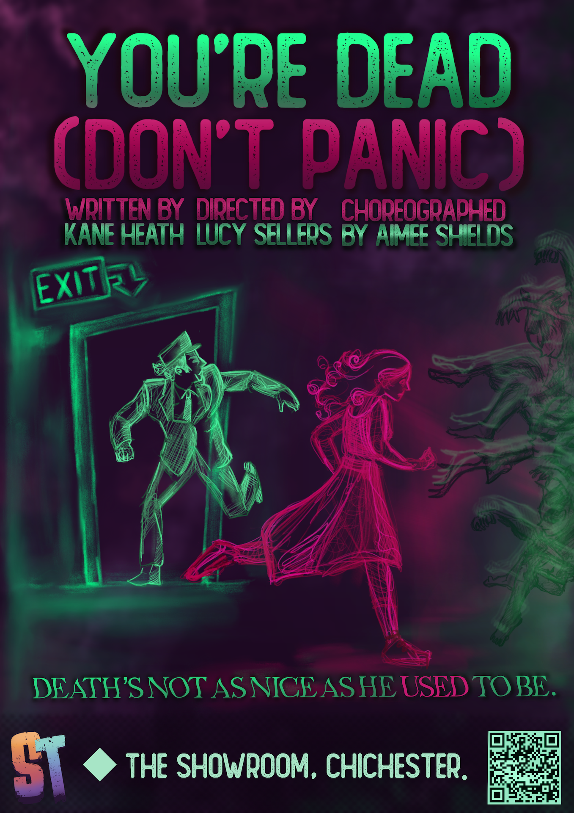

WHERE AND WHEN?
The workshop will take place on the 10th of October 2026 and will begin at 5:00pm at the University of Chichester in the Showroom Theatre at Bishop Otter campus, College Lane, Chichester, West Sussex, PO19 6PE.
CAST WORKSHOP / OCTOBER 2026
Hello and thank you for your interest in joining the cast of You're Dead (Don't Panic.)! If you have any questions or need adjustments made so we can better accomodate your needs, the easiest way to get in contact is via email or social media, all of which are linked all over the site. Here, you will find everything relevant to the workshop process.
The workshop will take place on the 10th of October 2026 and will begin at 5:00pm at the University of Chichester in the Showroom Theatre at Bishop Otter campus, College Lane, Chichester, West Sussex, PO19 6PE.
The workshop will be broken into two sections and will be a relaxed environment. It is an opportunity for us to experiment with ensemble chemistry and character, and to explore and encourage your unique skillsets comfortably and appropriately.
The first section of the workshop will include general warm-up and familiarisation with the material and it’s development, and acts as an opportunity to get engaged with the creative process and ask questions.
The second section will be a more structured exploration of material in which you will be offered a series of texts to sight-read in front of an audience. This will consist of solo and group material.
(Captured below is a photo from our original workshop meetings last year!)

The Play
You’re Dead (Don’t Panic) is a fantasy stage-play rooted in Greek Mythology.
It follows Iris, a wayward soul, and the Doorman to the dead, who is responsible for processing souls and encouraging a quick passing into the afterlife.
Iris begins to challenge the systems that the underworld abides by, imposed by the god Hades; and in turn offers the Doorman an opportunity to reflect on his neglect and disregard of human life.
The original workshop production played in May/June 2025. You can find information and photography from the original rehearsed reading by going to the 'What's On' section of the website and scrolling to previous works.

CHARACTERS
No character has a set gendered role. Gender is only suggested, and adaptations will be made once casting is decided.
Like finely carved wood, polished and sealed. He is orderly, precise, unwavering. Ex-Ferryman.
A wayward soul, lost and confused. She remembers her name, but not much else. She has a fire inside her she will not let be stifled.
The overseer of this whole ordeal, the Underworld's 'Boss Man.' Memento Mori. 'Remember you must die.'
Spring-incarnate. Six months more humanity than her husband. They've been long distance for a while.
The Furies, the Dirae ('the dreadful ones'), ever-present adjudicators reduced to players in an unjust game. Alecto, Megeara, and Tisiphone.
The dried-up river-god of forgetfulness. Salty.
A chthonic god. Doesn't care about much. Abandoned by the afterlife. The conductor of Asphodel.
A Greek Chorus of the deceased. Identified not by name, but by feature, death, or numeral: Ena, Dio, Tria, Tesera, and Pende.